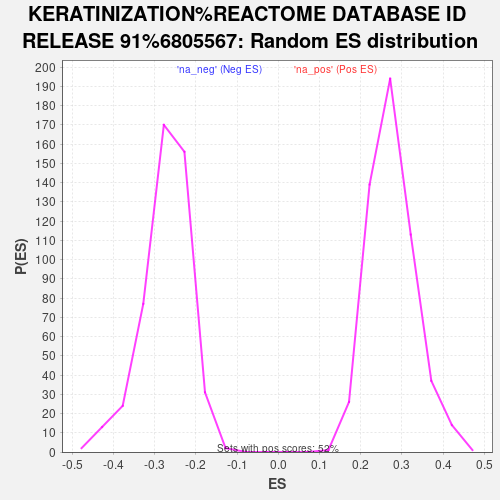

| | | Dataset | Tumour_vs_PDO |
| Phenotype | NoPhenotypeAvailable |
| Upregulated in class | na_pos |
| GeneSet | KERATINIZATION%REACTOME DATABASE ID RELEASE 91%6805567 |
| Enrichment Score (ES) | 0.8166343 |
| Normalized Enrichment Score (NES) | 2.9812267 |
| Nominal p-value | 0.0 |
| FDR q-value | 0.0 |
| FWER p-Value | 0.0 |
Table: GSEA Results Summary
 Fig 1: Enrichment plot: KERATINIZATION%REACTOME DATABASE ID RELEASE 91%6805567
Fig 1: Enrichment plot: KERATINIZATION%REACTOME DATABASE ID RELEASE 91%6805567
Profile of the Running ES Score & Positions of GeneSet Members on the Rank Ordered List
| SYMBOL | RANK IN GENE LIST | RANK METRIC SCORE | RUNNING ES | CORE ENRICHMENT | | 1 | KRT6A | 2 | 2.788 | 0.0435 | Yes |
| 2 | KLK12 | 19 | 2.229 | 0.0774 | Yes |
| 3 | KLK5 | 29 | 2.141 | 0.1104 | Yes |
| 4 | DSC3 | 33 | 2.094 | 0.1429 | Yes |
| 5 | KRT6B | 39 | 2.026 | 0.1743 | Yes |
| 6 | KRT14 | 40 | 2.010 | 0.2057 | Yes |
| 7 | SPRR1A | 41 | 2.008 | 0.2371 | Yes |
| 8 | KRT13 | 46 | 1.983 | 0.2679 | Yes |
| 9 | PKP1 | 54 | 1.936 | 0.2978 | Yes |
| 10 | KRT4 | 63 | 1.865 | 0.3265 | Yes |
| 11 | RPTN | 101 | 1.716 | 0.3511 | Yes |
| 12 | KRT5 | 125 | 1.670 | 0.3759 | Yes |
| 13 | SPRR2A | 128 | 1.666 | 0.4019 | Yes |
| 14 | KRT78 | 139 | 1.648 | 0.4270 | Yes |
| 15 | IVL | 171 | 1.579 | 0.4499 | Yes |
| 16 | SPRR3 | 183 | 1.557 | 0.4736 | Yes |
| 17 | EVPL | 193 | 1.535 | 0.4971 | Yes |
| 18 | SPINK5 | 198 | 1.529 | 0.5208 | Yes |
| 19 | FLG | 233 | 1.477 | 0.5419 | Yes |
| 20 | PERP | 245 | 1.457 | 0.5640 | Yes |
| 21 | KRT15 | 289 | 1.386 | 0.5832 | Yes |
| 22 | SPRR1B | 313 | 1.361 | 0.6032 | Yes |
| 23 | JUP | 316 | 1.357 | 0.6243 | Yes |
| 24 | KRT16 | 328 | 1.337 | 0.6445 | Yes |
| 25 | KRT23 | 336 | 1.325 | 0.6648 | Yes |
| 26 | CAPN1 | 384 | 1.271 | 0.6820 | Yes |
| 27 | PKP3 | 672 | 1.068 | 0.6819 | Yes |
| 28 | CSTA | 690 | 1.060 | 0.6975 | Yes |
| 29 | DSP | 711 | 1.047 | 0.7127 | Yes |
| 30 | KRT10 | 802 | 1.006 | 0.7232 | Yes |
| 31 | DSC2 | 854 | 0.984 | 0.7356 | Yes |
| 32 | SPRR2D | 911 | 0.957 | 0.7473 | Yes |
| 33 | PPL | 927 | 0.951 | 0.7613 | Yes |
| 34 | KRT17 | 1019 | 0.915 | 0.7703 | Yes |
| 35 | KAZN | 1117 | 0.878 | 0.7784 | Yes |
| 36 | SPRR2E | 1436 | 0.774 | 0.7719 | Yes |
| 37 | TGM1 | 1653 | 0.725 | 0.7706 | Yes |
| 38 | KRT8 | 1685 | 0.718 | 0.7801 | Yes |
| 39 | KRT80 | 1933 | 0.664 | 0.7760 | Yes |
| 40 | KRT18 | 2053 | 0.642 | 0.7791 | Yes |
| 41 | KRT75 | 2084 | 0.636 | 0.7873 | Yes |
| 42 | KLK8 | 2166 | 0.618 | 0.7923 | Yes |
| 43 | ST14 | 2226 | 0.603 | 0.7983 | Yes |
| 44 | TCHH | 2304 | 0.589 | 0.8030 | Yes |
| 45 | PKP4 | 2319 | 0.587 | 0.8113 | Yes |
| 46 | KRT19 | 2384 | 0.578 | 0.8166 | Yes |
| 47 | PRSS8 | 3615 | 0.401 | 0.7511 | No |
| 48 | PKP2 | 3962 | 0.358 | 0.7365 | No |
| 49 | PI3 | 4422 | 0.314 | 0.7147 | No |
| 50 | KRTAP5-1 | 4432 | 0.313 | 0.7190 | No |
| 51 | DSG2 | 5416 | 0.219 | 0.6651 | No |
| 52 | TGM5 | 5679 | 0.197 | 0.6529 | No |
| 53 | CAPNS1 | 7492 | 0.067 | 0.5482 | No |
| 54 | FURIN | 8229 | 0.025 | 0.5056 | No |
| 55 | PCSK6 | 10971 | -0.144 | 0.3480 | No |
| 56 | KRT81 | 11279 | -0.168 | 0.3327 | No |
| 57 | KRT86 | 15953 | -0.794 | 0.0724 | No |
Table: GSEA details [plain text format]

Fig 2: KERATINIZATION%REACTOME DATABASE ID RELEASE 91%6805567: Random ES distribution
Gene set null distribution of ES for KERATINIZATION%REACTOME DATABASE ID RELEASE 91%6805567